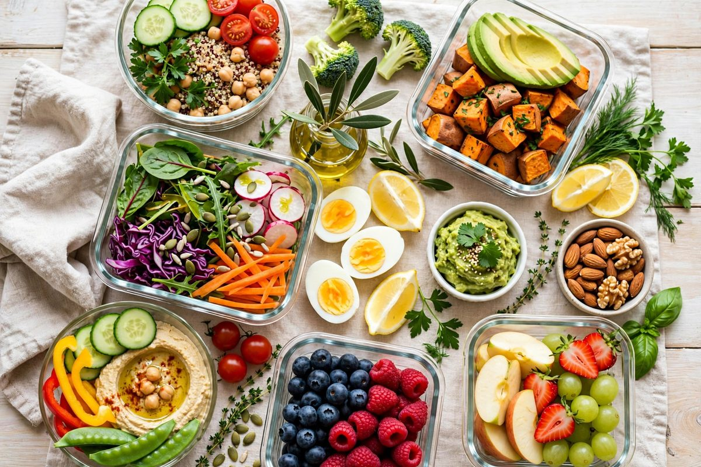

Maintaining Weight Loss — Life After the Diet
How to move from losing weight to keeping it off: calories, habits, monitoring, and enjoying food again.
Maintenance is a new phase
Reaching your target weight is a real achievement, and it deserves celebrating. But it is not the end of the work; it is the start of a new phase. Maintenance means eating at your new maintenance calories, which are lower than before you lost weight, because a smaller body burns fewer calories. Many people are surprised by this and return to their old intake, which causes regain. Plan maintenance deliberately, with a new calorie target, rather than drifting back to old habits.
Finding your maintenance calories
Use the calorie calculator on our home page with your new weight to estimate your maintenance calories, then eat at that level for two or three weeks and watch your weight. If it stays stable, you have found your level. If it rises, eat a little less; if it falls, eat a little more. Increase your calories gradually from your deficit level, adding about 100 to 200 calories a week, so the change is gentle. Keep protein and fibre high, because they keep you full at the higher intake too.
Keeping the habits
Keep the habits that worked: regular meals, vegetables at most meals, daily walking, strength training twice a week, and enough sleep. These habits are now your normal life, not a diet. Allow more flexibility: a meal out, a dessert, or a drink is fine when the overall pattern is healthy. People who keep weight off usually eat a consistent pattern most days and enjoy treats occasionally, rather than being strict all week and overeating at the weekend. Find a balance that feels sustainable, not one that feels like a punishment.
Monitoring and early action
Weigh yourself once a week and keep an eye on your waist and clothes. Set a personal action point, such as two kilograms above your target, at which you return to tracking food for a week and add a little activity. Acting on a small gain is easy and painless; waiting until the gain is large is hard. Keep a short food diary for a week every few months, as a check-up, even if you do not track daily. Monitoring is not dieting; it is how you stay in control without thinking about food all the time.
Enjoying food again
Maintenance should include enjoyment. Eat foods you love, cook meals you enjoy, and eat out with friends. The difference is portion and frequency, not prohibition. If you find yourself thinking about food constantly or feeling guilty about eating, ease off the restriction and focus on habits. A healthy relationship with food is part of maintenance, and it matters as much as the number on the scale. If food thoughts become distressing, talk to a professional.
The long view
Maintaining weight loss is a lifelong practice, but it gets easier. The first year is the hardest, because habits are still new and the body is still adjusting. After that, the habits become automatic, and the effort falls. People who maintain their weight for two years or more are much more likely to keep it off long term. Be patient, be kind to yourself, and remember that the goal was never just a number: it was a healthier, more active life, and maintenance is living that life.
Frequently Asked Questions
How many calories should I eat to maintain my weight?
Use the calculator on our home page with your new weight to estimate maintenance calories. Eat at that level for two to three weeks, then adjust based on whether your weight stays stable.
How do I stop regaining weight after a diet?
Keep the habits: regular meals, daily walking, strength training, enough sleep, and weekly weighing. Act quickly on small gains of one or two kilograms.
Can I eat normally again after losing weight?
Yes, but normal now means your new maintenance intake, which is lower than before you lost weight. Enjoy treats in moderation within an overall healthy pattern.